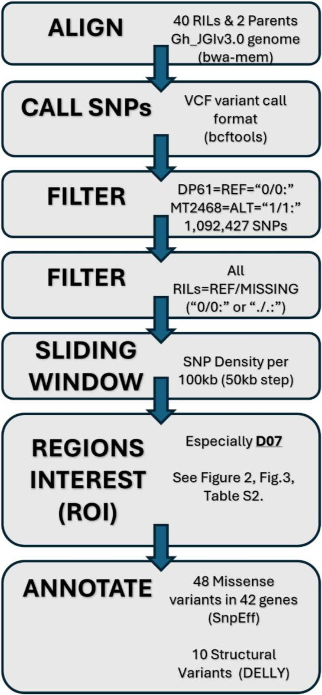
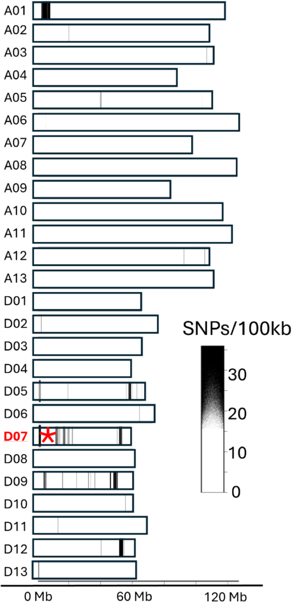
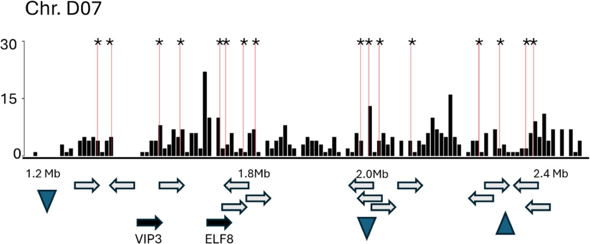
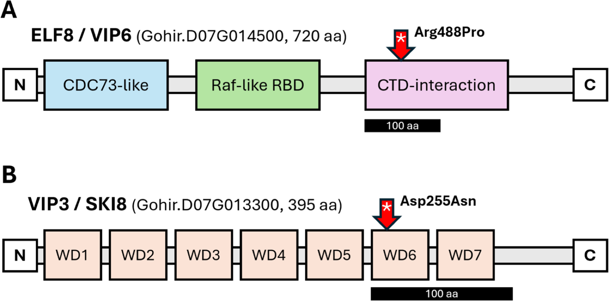

Research / Plant genomics
Day-Neutral Flowering Candidate Genes Identified by Selection Mapping in Upland Cotton
Pinnika, G., Wubben, M.J., McCarty, J.C., Fang, D.D., Thyssen, G.N. (2026). Theoretical and Applied Genetics 139, 248. First author.
My role: Processed and analyzed the sequencing data with G.N. Thyssen, and wrote the paper. (from the paper's author contributions)
Read the paperSummary
Modern upland cotton must flower regardless of day length to be grown at temperate latitudes, but the genes behind this day-neutral habit are not well understood. We resequenced two parents and 40 recombinant inbred lines (RILs) that had all been selected for day-neutral flowering, and searched for genomic regions where the photoperiod-sensitive parent's DNA had been eliminated by that selection.
Key result. A selection signal on chromosome D07 contains missense variants in cotton orthologs of ELF8/VIP6 and VIP3/SKI8, two subunits of the PAF1 transcription elongation complex. Loss of either gene causes early, photoperiod-insensitive flowering in Arabidopsis.
Approach
- Population: RILs from DP61 (day-neutral) by MT2468 Ren1, selected for day-neutral flowering in every generation.
- Sequencing: parents at about 30x and 40 RILs at 10x, aligned to the G. hirsutum JGI v3.0 genome with bwa-mem2.
- Selection mapping: joint SNP calling with bcftools, then keeping parent-specific SNPs where every RIL carries the day-neutral allele.
- Regions of interest: SNP density in 100 kb sliding windows (50 kb steps).
- Annotation: SnpEff for coding effects, DELLY for structural variants, and TAIR10 orthologs for gene function.

Results
| Step | Result |
|---|---|
| Parent-specific SNPs (DP61 reference, MT2468 Ren1 alternate) | 1,092,427 |
| SNPs where all 40 RILs carry the day-neutral allele | 23,961 |
| Regions under selection | 5 (A01, D05, D07, D09, D12) |
| Primary region | D07: 1.20 to 2.45 Mb, 433 SNPs |
| Missense variants in all regions | 48 in 42 genes (17 in 16 genes on D07) |
| Structural variants near D07 | 10, including a 16.5 kb deletion in MT2468 Ren1 |


Priority candidate genes
| Gene | Position (D07) | Amino acid change | Arabidopsis ortholog | Role |
|---|---|---|---|---|
| Gohir.D07G014500 | 1,638,485 | Arg488Pro | ELF8 / VIP6 | PAF1 complex subunit; change in the CTD-interaction-like domain |
| Gohir.D07G013300 | 1,503,103 | Asp255Asn | VIP3 / SKI8 | PAF1 complex subunit; change in the sixth WD40 repeat |

Takeaways
- Selection mapping in a selected RIL panel can locate trait genes without a segregating phenotype.
- The PAF1 complex is a priority candidate for day-neutral flowering in cotton and a possible source of markers for breeding.
Figures reproduced from the paper, a U.S. Government work not under copyright in the US.